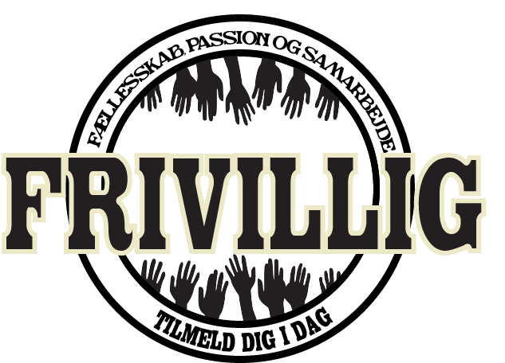

FORDELE
- Fri adgang til alle arrangementer
- 20% i baren
- Gratis mad/drikke under vagter
- Et fantastisk fællesskab
- Eksklusiv Radar/crew-tshirt
For kun 5 vagter om måneden!
Vores frivillige fortæller
Det har bare været mega fedt at være frivillig på Radar! Jeg kan ikke forestille mig noget bedre!

Malthe
Radar er bare stedet for musik i Aarhus, det er mega fedt. Jeg er så glad for at være med på holdet.

Lars
Radar er bare unikt. Jeg kan slet ikke beskrive det, og så holder de nogle fede aktiviteter for os frivillige!

Laura